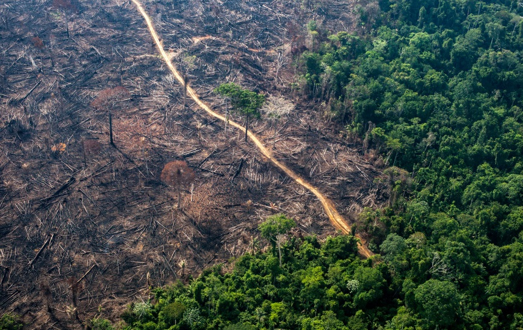

O que tem causado o desmatamento na Amazônia?
Você já reparou a quantidade de filmes de ficção científica com realidades distópicas?
Será que não deveríamos nos perguntar o que levou o planeta àquela situação? O uso irracional dos recursos finitos do nosso planeta é a principal causa.
A Terra tem pouco mais de quatro bilhões e quinhentos milhões de anos, mas as primeiras formas de vida multicelulares têm menos da metade desta idade.
De lá para cá a vida na terra passou por diversos eventos de extinção, seis no total, ocorridas por eventos cataclísmicos, atualmente vivemos um novo período de extinção em massa chamado de Extinção em massa do Holoceno.
Esse evento diferencia-se dos demais por suas causas. Aqui é o ser humano o evento cataclísmico que vem extinguindo de modo constante diversas espécies.
Essas extinções acontecem por conta do avanço do homem contra a natureza. No Brasil, na região amazônica não é diferente. Há anos tem-se incentivado o uso do solo amazônico deslocando grandes grupos populacionais para a região.
Ações polêmicas como o Projeto Jari nos anos 60, ou ainda a Fordlândia de Henry Ford, às margens do rio Tapajós, em 1927 demonstra de forma recorrente o uso que damos a floresta amazônica. As invasões de áreas de proteção ambiental, o garimpo ilegal, grilagem, a desobediência as leis e sobretudo um estado recorrentemente conivente o respeito que temos com nossas florestas.
A falta de percepção de que a floresta tem limites para se recompor parece não assustar esses interesses que tratam de abarcar os recursos finitos da floresta como se fossem eternos e infinitos. Quantas espécies será que já perdemos por conta dessa ganância? Fontes na Organização Mundial da Saúde, OMS, acreditam que a próxima pandemia a assolar a humanidade deverá vir de áreas deflorestadas da Amazônia.
Somente o interesse econômico pode explicar o processo que vem ocorrendo em nossas florestas e enquanto não compreendermos o quanto árvores que ficam a milhares de quilômetros de nossas casas são tão fundamentais para a vida e prosperidade em nosso pais continuaremos a duzimar nossas florestas sem com isso levar qualquer ganho às comunidades nativas da região.
Quais são as consequencias do desmatamento?
São Paulo, dia 19 de agosto de 2019. Era por volta de 15 horas e o céu escureceu repentinamente. Era o final do inverno e a conjunção entre a chegada de uma frente fria, fato corriqueiro num inverno, com a fumaça de queimadas na região amazônica transformaram aquele fim de tarde em uma noite precoce. Nove dias antes, no dia dez daquele mês, numa ação coordenada batizada de dia do fogo, o numero de queimadas aumentou 300% segundos dados do Instituto Nacional de Pesquisas Espaciais (Inpe). Hoje, outro efeito do desmatamento descontrolado da Amazônia é a crise hídrica que desestabilizou o sistema de geração elétrica no Brasil que tem sua matriz na geração hidroelétrica. A evaporação das águas pela floresta foi severamente comprometida pelo desmatamento e as queimadas diminuindo drasticamente o chamado rio aéreo ou rio voador. Esse fluxo constante de água desloca-se da região amazônica irrigando o centro oeste, sudeste e o sul do Brasil. Esse esgotamento além de comprometer nossa matriz energética também dificulta a situação dos agricultores que habitam as regiões abastecidas pelas chuvas trazidas pelo fluxo desse rio, muitas vezes mais caudaloso que o próprio rio Amazonas. Essa dicotomia entre o desmatamento para novos pastos e áreas de cultivo e o empobrecimento desses solos é o principal efeito das ações do homem na natureza.
Reforçar os órgãos de fiscalização e principalmente agir com o rigor da lei multando e prendendo os responsáveis seria por si medida suficiente para encerrar o desmatamento ilegal, entretanto entre a vontade política e a ação existe não um hiato, mas um abismo praticamente intransponível. Infelizmente nos últimos anos, o interesse e vontade política submete-se a interesses contrários a natureza. Enquanto o desejo de moveis de mogno forem sonhos de consumo em países como a Inglaterra ou os Estados Unidos, o corte ilegal de árvores e a remessa dessa madeira para o exterior continuaram acontecendo. O brasil retorna aos seus primórdios da exploração europeia e transforma-se em exportador de commodities. Tratados internacionais devem ser buscados para que se acabe com a exportação de madeiras nobres, mesmo de forma legal, pois somente com esse fim a floresta pode ser preservada